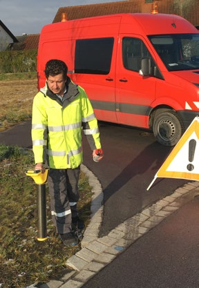
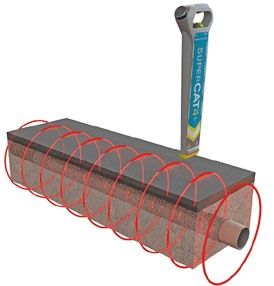
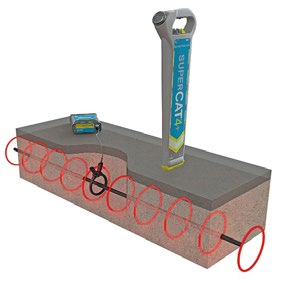

"Vor Beginn von Bauarbeiten ist durch den Unternehmer bzw. die Unternehmerin zu ermitteln, ob im vorgesehenen Arbeitsbereich Anlagen vorhanden sind, durch die Personen gefährdet werden können.
Sind Anlagen vorhanden, so sind im Benehmen mit dem Eigentümer oder dem Betreiber der Leitung deren Lage und Verlauf zu ermitteln sowie die erforderlichen Sicherungsmaßnahmen festzulegen und durchzuführen".
So lautet die Forderung im § 16 der Unfallverhütungsvorschrift "Bauarbeiten" (DGUV Vorschriften 38 und 39).
Der arbeitsausführende Unternehmer bzw. die Unternehmerin hat sich also immer vor Beginn der Arbeiten bei den zuständigen Stellen zu erkundigen, ob Kabel oder Leitungen im Arbeitsbereich vorhanden sind, welchen Verlauf und welche Tiefe diese haben.
Stehen nur ungenaue Kabelpläne zur Verfügung, muss durch manuelle Suchschachtungen die Lage der Kabel bestimmt werden. Nach den Erkundigungsarbeiten sind der Verlauf und möglichst auch die Tiefenlage der Kabel im Baubereich kenntlich zu machen. Das kann durch Oberflächenmarkierungen mit Sprühfarbe geschehen oder durch Einmessen und Setzen von Pflöcken. Dabei ist zu beachten, dass bei fehlender Kenntnis der genauen Lage der Leitungen keine Gegenstände in den Boden getrieben werden dürfen, welche die erdverlegten Leitungen beschädigen könnten.
Die genaue Position erdverlegter Kabel kann alternativ mit Kabelortungsgeräten gefunden werden. Diese Arbeit ist unkompliziert und man kann sie nach kurzer Einarbeitung problemlos selber durchführen.

Abb. 5 Leitungssuche mit Ortungsgerät
Wie funktioniert nun ein Kabelortungsgerät?
Wenn durch Leitungen Wechselstrom fließt, entsteht um diese Leitungen ein elektromagnetisches Wechselfeld. Das Kabelortungsgerät erkennt dieses Feld und zeigt es an.
Es gibt zwei prinzipielle Ortungsvarianten: die passive und die aktive Ortung.
Passive Ortung
Bei der passiven Ortung werden die Frequenzen geortet, die von dem zu suchenden Kabel ausgestrahlt werden. Hierbei handelt es sich meistens um 50 Hz. Auch Langwellenfrequenzen zwischen 15 und 23 kHz können detektiert werden, da sie erdverlegte Kabel und Leitungen als Rückleiter zum Ausgangspunkt nutzen.
Bei der passiven Ortung können allerdings nur stromdurchflossene Leitungen geortet werden.

Abb. 6 Passive Ortung einer stromdurchflossenen Leitung
Aktive Ortung
Bei der aktiven Ortung wird von einem Generator ein künstlich erzeugtes Signal in das Kabel oder auf die metallisch leitende Rohrleitung eingespeist. Dieses Verfahren wird dann angewendet, wenn von der zu ortenden Leitung selbst kein Signal ausgeht oder diese Leitung nicht von anderen, im Arbeitsbereich vorhandenen Leitungen unterschieden werden kann. Durch Verfolgung dieses Signals kann z. B. ein Trassenverlauf exakt bestimmt und seine Tiefe genau ermittelt werden.
Es gibt zwei unterschiedliche Methoden der Signaleinkopplung auf die zu ortende Leitung:
Die direkte (galvanische) Kopplung kommt zur Anwendung, wenn die zu ortende Leitung problemlos zugänglich und spannungsfrei ist. Hier wird eine direkte elektrische Verbindung zwischen Signalquelle und Leitung hergestellt.
Die indirekte (induktive) Kopplung kommt zur Anwendung, wenn kein direkter Zugang zu der zu ortenden Leitung besteht oder dieses unter Spannung steht.

Abb. 7 Indirekte (induktive) Einkopplung eines Signals
Bei der induktiven Kopplung wird häufig eine Sendezange um die im weiteren Verlauf zu ortende Leitung gelegt, so dass diese Leitung während der Ortung in Betrieb bleiben kann.
Durch weiteres Zubehör, wie z. B. Schubkabel oder Sonden, können auch Kunststoffrohrleitungen geortet werden.
Abb. 8 Aktive Ortung, im Vordergrund Sender zur Signaleinkopplung